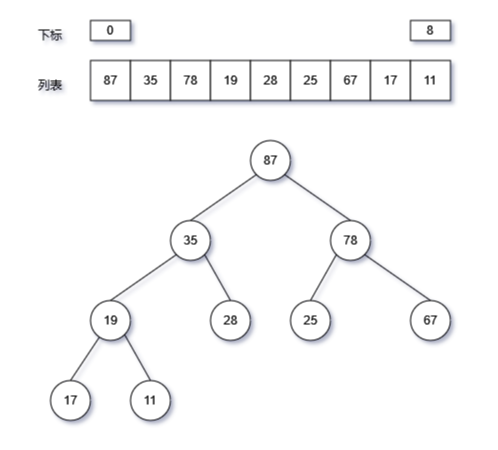
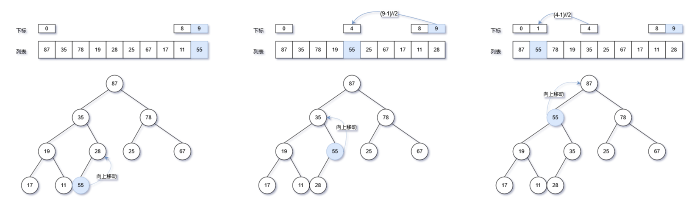
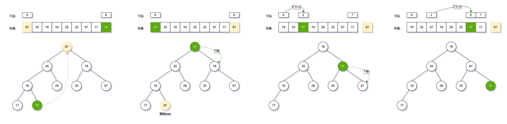

Python堆操作
大顶堆的实现与操作
一、概念

堆heap：用于表示优先队列
- 是一个完全二叉树，最底层节点靠左填充，其他层的节点都被填满；
- 小顶堆：任意节点的值< 左右子节点
- 大顶堆：任意节点的值> 左右子节点
- 堆通常用于实现优先队列，大顶堆相当于元素按从大到小的顺序出队的优先队列。
堆的表示：完全二叉树，用列表表示，通过映射公式计算父节点、左右子节点的列表下标：
- 左子节点的索引为：i×2+1
- 右子节点的索引为：i×2+2
- 父节点的索引为：(i-1)//2
二、入堆(push)

在堆中新添加一个元素，使用列表的append方法添加至列表的尾部，然后通过向上移动此元素，通过比较大小，使其符合大顶堆的定义。
向上移动实现:
- while循环从新节点开始向上遍历，比较当前节点与父节点的大小
- 如果当前节点大于父节点，则两个节点互相交换
- 然后继续循环向上比较两个节点
- while循环终止条件：如果当前节点小于父节点，则终止（隐含条件：原列表已经符合堆的规则，父节点大于左右子节点）
# 新元素入堆
def push(self, value):
# 将新元素添加至尾部
self.max_heap.append(value)
# 向上移动末尾节点
self.shift_up(self.size() - 1)
# 新元素入堆后，需要向上移动至合适位置
def shift_up(self, i):
while True:
# 获取父节点
p = self.getPar(i)
# 终止循环条件：达到根节点或者子节点小于根节点
if p < 0 or self.getVal(i) <= self.getVal(p):
break
# 向上移动：交换节点和根节点
self.swap(i, p)
# 进入下一步循环：进入父节点
i = p
三、堆顶出堆(pop)

将堆顶节点（列表第0个元素）与堆最后一个节点（列表最后1个元素）互换，然后列表弹出最后一个元素（pop），即堆顶元素。同时对新的堆，从堆顶进行向下移动，以其符合堆的规则。
向下移动实现
- 从堆顶循环遍历整个堆，将新的堆顶元素与左右子节点比较；
- 如果堆顶节点小于左右子节点，则与左右节点中最大的节点互换；
- 进入互换元素的子节点，循环执行上述步骤；
- while循环终止条件：数组遍历结束（达到数组最大长度位置）或者父节点大于左右子节点（符合堆的定义），注意这个步骤：
if mx == i:
# 堆顶元素出堆
def pop(self):
if self.isEmpty():
raise IndexError("空堆")
# 堆顶元素与尾部元素互换
self.swap(0, self.size() - 1)
# 弹出堆顶元素，此时堆顶元素在最尾部，pop即可
value = self.max_heap.pop()
# 堆顶新元素向下移动
self.shift_down(0)
return value
# 堆顶元素向下移动
def shift_down(self, i):
while True:
# 定义三个变量，当前元素、左节点、右节点的数组下标，默认最大值的下标为当前元素
l, r, mx = self.getLeft(i), self.getRight(i), i
# 找到三个变量中最大的元素
# 如果左节点大于最大元素，将mx为左节点
if l < self.size() and self.max_heap[mx] < self.max_heap[l]:
mx = l
# 如果右节点大于最大元素，将mx为右节点
if r < self.size() and self.max_heap[mx] < self.max_heap[r]:
mx = r
# 跳出循环条件：数组遍历结束或当前节点比左右节点都大（此时mx仍然指向i，无须向下遍历）
if mx == i:
break
# 将当前节点与左右节点互换
self.swap(i, mx)
# 继续循环条件：进入互换后的下一个节点
i = mx
四、其他功能函数
- 初始化建堆
新建一个空堆，然后将列表元素逐个入堆（push），这相当于在堆列表尾部依次添加元素，然后将最末尾元素逐渐线上移动的过程。
def __init__(self, nums):
self.max_heap = []
#自顶向下建堆，逐个元素压入堆
for i in nums:
self.push(i)
五、全部代码
# 自定义堆的实现，大顶堆
class MaxHeap:
def __init__(self, nums):
self.max_heap = []
#自顶向下建堆，逐个元素压入堆
for i in nums:
self.push(i)
def getVal(self, i):
# 这里需要判断是否越界，否则深度优先遍历会报错
if i < 0 or i >= self.size():
return None
return self.max_heap[i]
def getLeft(self, i):
return i * 2 + 1
def getRight(self, i):
return i * 2 + 2
def getPar(self, i):
return (i - 1) // 2
def size(self):
return len(self.max_heap)
def isEmpty(self):
return self.size() == 0
def dfs_mid(self):
self.__res=[]
self.dfs(0,'mid')
return self.__res
# 深度优先遍历
def dfs(self,i,order):
if self.getVal(i) is None:
return
if order=='pre':
self.__res.append(self.getVal(i))
self.dfs(self.getLeft(i),order)
if order=='mid':
self.__res.append(self.getVal(i))
self.dfs(self.getRight(i),order)
if order=='post':
self.__res.append(self.getVal(i))
# 交换堆内的两个节点内容
# python独特的变量互换写法
def swap(self, i, j):
self.max_heap[i], self.max_heap[j] = self.max_heap[j], self.max_heap[i]
def peek(self):
return self.max_heap[0]
# 新元素入堆
def push(self, value):
# 将新元素添加至尾部
self.max_heap.append(value)
# 向上移动末尾节点
self.shift_up(self.size() - 1)
# 新元素入堆后，需要向上移动至合适位置
def shift_up(self, i):
while True:
# 获取父节点
p = self.getPar(i)
# 终止循环条件：达到根节点或者子节点小于根节点
if p < 0 or self.getVal(i) <= self.getVal(p):
break
# 向上移动：交换节点和根节点
self.swap(i, p)
# 进入下一步循环：进入父节点
i = p
# 堆顶元素出堆
def pop(self):
if self.isEmpty():
raise IndexError("空堆")
# 堆顶元素与尾部元素互换
self.swap(0, self.size() - 1)
# 弹出堆顶元素，此时堆顶元素在最尾部，pop即可
value = self.max_heap.pop()
# 堆顶新元素向下移动
self.shift_down(0)
return value
# 堆顶元素向下移动
def shift_down(self, i):
while True:
# 定义三个变量，当前元素、左节点、右节点的数组下标，默认最大值的下标为当前元素
l, r, mx = self.getLeft(i), self.getRight(i), i
# 找到三个变量中最大的元素
# 如果左节点大于最大元素，将mx为左节点
if l < self.size() and self.max_heap[mx] < self.max_heap[l]:
mx = l
# 如果右节点大于最大元素，将mx为右节点
if r < self.size() and self.max_heap[mx] < self.max_heap[r]:
mx = r
# 跳出循环条件：数组遍历结束或当前节点比左右节点都大（此时mx仍然指向i，无须向下遍历）
if mx == i:
break
# 将当前节点与左右节点互换
self.swap(i, mx)
# 继续循环条件：进入互换后的下一个节点
i = mx